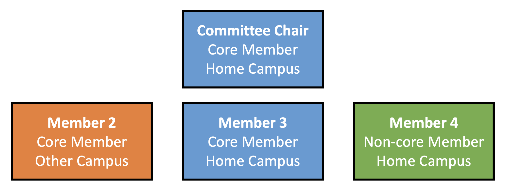
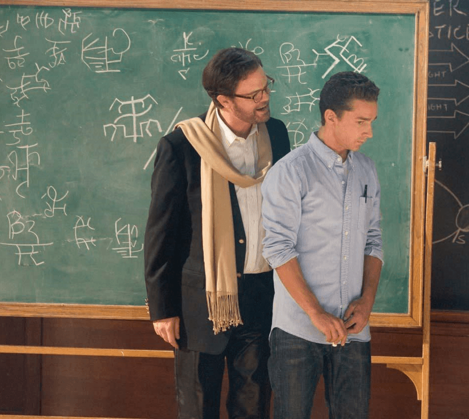

Forming a Quals Committee
Your committee will consist of four faculty members who are members of their academic senate. They must represent both the field of engineering and biology, as well as both UC Berkeley and UCSF campus, and cannot be your research mentor. Exceptions may be considered by petition to the Head Graduate Advisers. Your committee must include:
- Chair: Core Member from the student’s home campus
- Member 2: Core member from opposite campus
- Member 3: Core member from student’s home campus
- Member 4: Any Academic Senate member from either campus
To choose members for your committee, ask for suggestions from your research mentor. While you do not need to know them, it may be helpful to start fostering a relationship with them. Although members do not have to be directly in the field of your project, choose members that have different expertise that is relevant to your project. If you are having trouble contacting them, try emailing their administrator, attending their group meeting, or going to their office hours.

Exam Content
In the qualifying exam, students demonstrate their ability to recognize and attack research problems of fundamental importance, to propose appropriate theoretical, experimental or computational approaches to address these problems, and to display comprehensive knowledge of their disciplinary area and related subjects.
Project Proposal: Your proposal should describe approximately 6-12 months of work. A typical proposal is about 4 pages in length and should be formatted like a grant, however this may vary at your Committee Chair’s discretion. You should plan to send your final proposal to your committee members around 3 weeks to 1 month prior to your examination date. Remember to bring physical copies to your exam for the committee members to reference.

Qualifying Exam Rough Schedule
- Get kicked out for 5-10 minutes while Chair discusses exam format with committee
- Part 1: Research proposal talk
- Aim for ~15-20 slides
- Expect lots of interruptions and questions; will take 1-2 hours
- Part 2: Understanding of Field (Might get loosely combined with Part 1)
- Related work – Major and Minor subjects
- Ethics and Statistics questions
- Decision/Recommendations
- Get kicked out of the room again for 5-10 min
- Invited back for decision & recommendations
To help prep for the exam and what types of questions you might have to field, check out our ethics and statistics sample questions, or schedule a meeting with the Bioengineering Student Talks (BEST) Coordinator to schedule a practice quals talk. For more information on what your quals exam might look like, check out this presentation complied by past Beast presidents!
Advancement to Candidacy
Congratulations on passing your Qualifying Exam! You have overcome one of the biggest hurdles to your PhD. Now, as soon as possible, you will want to advance to candidacy. Once you are a PhD candidate, your non-resident tuition gets waived (international students) and more fellowship and award options are available. In order to be eligible for candidacy, you must:
- Pass your qualifying exam
- Maintain the minimum 3.0 grade point average in all upper division and graduate coursework, with no more than two courses having been graded as incomplete
- Form your dissertation committee
- Fill out the necessary forms: UC Berkeley & UCSF
- Pay the fees associated to advancement (Typically covered by your lab)
- Submit Application to Candidacy forms to the relevant administrator at your home campus
Quals Forms
Qualifying Exam Forms: By the end of the fall semester of your third year, you will need to take your qualifying exam and fill out paperwork (as usual). If you are UCSF-based, you must complete these forms at least 6 weeks before your qualifying exam. If you are Berkeley-based, you have a bit more flexibility; however, 6 weeks is a good goal.
In addition to the internal form to the right, which should be submitted to your home campus administrator, you also have to submit a Qualifying Examination form to your home school.
UCSF-based: Application for Qualifying Exam form must be filled out online through the student portal.
Berkeley-based: Go to CalCentral > My Dashboard > Student Resources > Submit a Form > Higher Degree Committees Form > Qualifying Examination form; then hit the Search button thing to find ‘Doctoral’ as your committee type and follow the instructions.
Advancing to Candidacy: In addition to the internal form to the right, which should be submitted to your home campus administrator, you also have to submit an Advancement to Candidacy form to your home school. UCSF-based: Advancement to candidacy – PhD form must be filled out online through the student portal. Berkeley-based: Go to CalCentral > My Dashboard > Student Resources > Submit a Form > Higher Degree Committees Form > Qualifying Examination form; then hit the Search button thing to find ‘Doctoral’ as your committee type and follow the instructions.